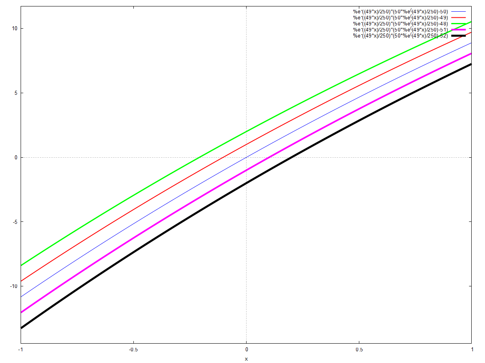

\( \DeclareMathOperator{\abs}{abs} \newcommand{\ensuremath}[1]{\mbox{$#1$}} \)
DSC-VI : Practical-01
Family of Solutions: First Order Differential Equations
1 y' = x² where y(0)=k
1.1 Using the pre-defined function 'ode2()' (works for an O.D.E. of order upto 2)
| --> |
ratprint
:
false
$
/* suppresses error messages */
kill ( all ) $ /* clear all user-defined variables */ de : ' diff ( y , x ) = x ^ 2 ; /* the eqn. is y' = x^2 */ sol : ode2 ( de , y , x ) ; /* `sol` is assigned the General soln. of `de`*/ sol1 : ic1 ( sol , x = 0 , y = k ) ; /* `sol1` is a particular solution, w/ def. constt. %c being replaced by `k` */ v1 : ev ( sol1 , k = − 2 ) ; /* random values are given to `k` */ v2 : ev ( sol1 , k = − 1 ) ; v3 : ev ( sol1 , k = 1 ) ; v4 : ev ( sol1 , k = 2 ) ; /* To plot the graphs */ wxplot2d ( [ rhs ( v1 ) , rhs ( v2 ) , rhs ( v3 ) , rhs ( v4 ) ] , [ x , − 3 , 3 ] , [ style , [ lines , 1 ] , [ lines , 2 ] , [ lines , 3 ] , [ lines , 4 ] ] ) $ |
\[\operatorname{(de) }\frac{d}{d x} y\operatorname{=}{{x}^{2}}\]
\[\operatorname{(sol) }y\operatorname{=}\frac{{{x}^{3}}}{3}\operatorname{+}\ensuremath{\mathrm{\% c}}\]
\[\operatorname{(sol1) }y\operatorname{=}\frac{{{x}^{3}}\operatorname{+}3 k}{3}\]
\[\operatorname{(v1) }y\operatorname{=}\frac{{{x}^{3}}\operatorname{-}6}{3}\]
\[\operatorname{(v2) }y\operatorname{=}\frac{{{x}^{3}}\operatorname{-}3}{3}\]
\[\operatorname{(v3) }y\operatorname{=}\frac{{{x}^{3}}\operatorname{+}3}{3}\]
\[\operatorname{(v4) }y\operatorname{=}\frac{{{x}^{3}}\operatorname{+}6}{3}\]
\[\operatorname{ }\]
1.2 Using the pre-defined function 'desolve()' (works for an O.D.E. of any order)
| --> |
ratprint
:
false
$
kill ( all ) $ /* clear all user-defined variables */ de : diff ( y ( x ) , x ) = x ^ 2 ; /* y is explicitly written as a function of x */ sol : desolve ( de , y ( x ) ) ; /* doesn't give constt.s explicitly but their values */ sol1 : ev ( sol , y ( 0 ) = k ) ; v1 : ev ( sol1 , k = − 2 ) ; v2 : ev ( sol1 , k = − 1 ) ; v3 : ev ( sol1 , k = 1 ) ; v4 : ev ( sol1 , k = 2 ) ; /* To plot the graphs */ wxplot2d ( [ rhs ( v1 ) , rhs ( v2 ) , rhs ( v3 ) , rhs ( v4 ) ] , [ x , − 3 , 3 ] , [ style , [ lines , 1 ] , [ lines , 2 ] , [ lines , 3 ] , [ lines , 4 ] ] ) $ |
\[\operatorname{(de) }\frac{d}{d x} \operatorname{y}(x)\operatorname{=}{{x}^{2}}\]
\[\operatorname{(sol) }\operatorname{y}(x)\operatorname{=}\frac{{{x}^{3}}}{3}\operatorname{+}\operatorname{y}(0)\]
\[\operatorname{(sol1) }\operatorname{y}(x)\operatorname{=}\frac{{{x}^{3}}}{3}\operatorname{+}k\]
\[\operatorname{(v1) }\operatorname{y}(x)\operatorname{=}\frac{{{x}^{3}}}{3}\operatorname{-}2\]
\[\operatorname{(v2) }\operatorname{y}(x)\operatorname{=}\frac{{{x}^{3}}}{3}\operatorname{-}1\]
\[\operatorname{(v3) }\operatorname{y}(x)\operatorname{=}\frac{{{x}^{3}}}{3}\operatorname{+}1\]
\[\operatorname{(v4) }\operatorname{y}(x)\operatorname{=}\frac{{{x}^{3}}}{3}\operatorname{+}2\]
\[\operatorname{ }\]
2 y' = 9.8 - 0.196y
2.1 Using 'ode2()'
| --> |
ratprint
:
false
$
kill ( all ) $ de : ' diff ( y , x ) = 9 . 8 − 0 . 196 · y ; gsol : ode2 ( de , y , x ) ; psol : ic1 ( gsol , x = 0 , y = k ) ; v0 : ev ( psol , k = 0 ) ; v1 : ev ( psol , k = 1 ) ; v2 : ev ( psol , k = 2 ) ; v3 : ev ( psol , k = − 1 ) ; v4 : ev ( psol , k = − 2 ) ; wxplot2d ( [ rhs ( v0 ) , rhs ( v1 ) , rhs ( v2 ) , rhs ( v3 ) , rhs ( v4 ) ] , [ x , − 1 , 1 ] , [ style , [ lines , 1 ] , [ lines , 2 ] , [ lines , 3 ] , [ lines , 4 ] , [ lines , 5 ] ] ) $ |
\[\operatorname{(de) }\frac{d}{d x} y\operatorname{=}9.8\operatorname{-}0.196 y\]
\[\operatorname{(gsol) }y\operatorname{=}{{\% e}^{-\left( \frac{49 x}{250}\right) }} \left( 50 {{\% e}^{\frac{49 x}{250}}}\operatorname{+}\ensuremath{\mathrm{\% c}}\right) \]
\[\operatorname{(psol) }y\operatorname{=}{{\% e}^{-\left( \frac{49 x}{250}\right) }} \left( 50 {{\% e}^{\frac{49 x}{250}}}\operatorname{+}k\operatorname{-}50\right) \]
\[\operatorname{(v0) }y\operatorname{=}{{\% e}^{-\left( \frac{49 x}{250}\right) }} \left( 50 {{\% e}^{\frac{49 x}{250}}}\operatorname{-}50\right) \]
\[\operatorname{(v1) }y\operatorname{=}{{\% e}^{-\left( \frac{49 x}{250}\right) }} \left( 50 {{\% e}^{\frac{49 x}{250}}}\operatorname{-}49\right) \]
\[\operatorname{(v2) }y\operatorname{=}{{\% e}^{-\left( \frac{49 x}{250}\right) }} \left( 50 {{\% e}^{\frac{49 x}{250}}}\operatorname{-}48\right) \]
\[\operatorname{(v3) }y\operatorname{=}{{\% e}^{-\left( \frac{49 x}{250}\right) }} \left( 50 {{\% e}^{\frac{49 x}{250}}}\operatorname{-}51\right) \]
\[\operatorname{(v4) }y\operatorname{=}{{\% e}^{-\left( \frac{49 x}{250}\right) }} \left( 50 {{\% e}^{\frac{49 x}{250}}}\operatorname{-}52\right) \]
\[\operatorname{ }\]
2.2 Using 'desolve()'
| --> |
ratprint
:
false
$
kill ( all ) $ de : diff ( y ( x ) , x ) = 9 . 8 − 0 . 196 · y ( x ) ; gsol : desolve ( de , y ( x ) ) ; psol : ev ( gsol , y ( 0 ) = k ) ; v0 : ev ( psol , k = 0 ) ; v1 : ev ( psol , k = − 4 ) ; v2 : ev ( psol , k = − 2 ) ; v3 : ev ( psol , k = 2 ) ; v4 : ev ( psol , k = 4 ) ; wxplot2d ( [ rhs ( v0 ) , rhs ( v1 ) , rhs ( v2 ) , rhs ( v3 ) , rhs ( v4 ) ] , [ x , − 3 , 3 ] , [ style , [ lines , 1 ] , [ lines , 2 ] , [ lines , 3 ] , [ lines , 4 ] , [ lines , 5 ] ] ) $ |
\[\operatorname{(de) }\frac{d}{d x} \operatorname{y}(x)\operatorname{=}9.8\operatorname{-}0.196 \operatorname{y}(x)\]
\[\operatorname{(gsol) }\operatorname{y}(x)\operatorname{=}\frac{\left( 250 \operatorname{y}(0)\operatorname{-}12500\right) {{\% e}^{-\left( \frac{49 x}{250}\right) }}}{250}\operatorname{+}50\]
\[\operatorname{(psol) }\operatorname{y}(x)\operatorname{=}\frac{\left( 250 k\operatorname{-}12500\right) {{\% e}^{-\left( \frac{49 x}{250}\right) }}}{250}\operatorname{+}50\]
\[\operatorname{(v0) }\operatorname{y}(x)\operatorname{=}50\operatorname{-}50 {{\% e}^{-\left( \frac{49 x}{250}\right) }}\]
\[\operatorname{(v1) }\operatorname{y}(x)\operatorname{=}50\operatorname{-}54 {{\% e}^{-\left( \frac{49 x}{250}\right) }}\]
\[\operatorname{(v2) }\operatorname{y}(x)\operatorname{=}50\operatorname{-}52 {{\% e}^{-\left( \frac{49 x}{250}\right) }}\]
\[\operatorname{(v3) }\operatorname{y}(x)\operatorname{=}50\operatorname{-}48 {{\% e}^{-\left( \frac{49 x}{250}\right) }}\]
\[\operatorname{(v4) }\operatorname{y}(x)\operatorname{=}50\operatorname{-}46 {{\% e}^{-\left( \frac{49 x}{250}\right) }}\]
\[\operatorname{ }\]
3 y'cos(x) + ysin(x) = 2cos³(x)sin(x)-1
| --> |
ratprint
:
false
$
kill ( all ) $ de : ' diff ( y , x ) · cos ( x ) + y · sin ( x ) = 2 · ( cos ( x ) ) ^ 3 · sin ( x ) − 1 ; gsol : ode2 ( de , y , x ) ; psol : ic1 ( gsol , x = 0 , y = k ) ; v0 : ev ( psol , k = 0 ) ; v1 : ev ( psol , k = − 1 ) ; v2 : ev ( psol , k = − 2 ) ; v3 : ev ( psol , k = 1 ) ; v4 : ev ( psol , k = 2 ) ; wxplot2d ( [ rhs ( v0 ) , rhs ( v1 ) , rhs ( v2 ) , rhs ( v3 ) , rhs ( v4 ) ] , [ x , − 1 , 1 ] , [ style , [ lines , 1 ] , [ lines , 2 ] , [ lines , 3 ] , [ lines , 4 ] , [ lines , 5 ] ] ) $ |
\[\operatorname{(de) }\cos{(x)} \left( \frac{d}{d x} y\right) \operatorname{+}\sin{(x)} y\operatorname{=}2 {{\cos{(x)}}^{3}} \sin{(x)}\operatorname{-}1\]
\[\operatorname{(gsol) }y\operatorname{=}\cos{(x)} \left( \operatorname{-}\left( \frac{1}{{{\tan{(x)}}^{2}}\operatorname{+}1}\right) \operatorname{-}\tan{(x)}\operatorname{+}\ensuremath{\mathrm{\% c}}\right) \]
\[\operatorname{(psol) }y\operatorname{=}\operatorname{-}\left( \frac{\cos{(x)} {{\tan{(x)}}^{3}}\operatorname{+}\left( \operatorname{-}k\operatorname{-}1\right) \cos{(x)} {{\tan{(x)}}^{2}}\operatorname{+}\cos{(x)} \tan{(x)}\operatorname{-}k \cos{(x)}}{{{\tan{(x)}}^{2}}\operatorname{+}1}\right) \]
\[\operatorname{(v0) }y\operatorname{=}\operatorname{-}\left( \frac{\cos{(x)} {{\tan{(x)}}^{3}}\operatorname{-}\cos{(x)} {{\tan{(x)}}^{2}}\operatorname{+}\cos{(x)} \tan{(x)}}{{{\tan{(x)}}^{2}}\operatorname{+}1}\right) \]
\[\operatorname{(v1) }y\operatorname{=}\operatorname{-}\left( \frac{\cos{(x)} {{\tan{(x)}}^{3}}\operatorname{+}\cos{(x)} \tan{(x)}\operatorname{+}\cos{(x)}}{{{\tan{(x)}}^{2}}\operatorname{+}1}\right) \]
\[\operatorname{(v2) }y\operatorname{=}\operatorname{-}\left( \frac{\cos{(x)} {{\tan{(x)}}^{3}}\operatorname{+}\cos{(x)} {{\tan{(x)}}^{2}}\operatorname{+}\cos{(x)} \tan{(x)}\operatorname{+}2 \cos{(x)}}{{{\tan{(x)}}^{2}}\operatorname{+}1}\right) \]
\[\operatorname{(v3) }y\operatorname{=}\operatorname{-}\left( \frac{\cos{(x)} {{\tan{(x)}}^{3}}\operatorname{-}2 \cos{(x)} {{\tan{(x)}}^{2}}\operatorname{+}\cos{(x)} \tan{(x)}\operatorname{-}\cos{(x)}}{{{\tan{(x)}}^{2}}\operatorname{+}1}\right) \]
\[\operatorname{(v4) }y\operatorname{=}\operatorname{-}\left( \frac{\cos{(x)} {{\tan{(x)}}^{3}}\operatorname{-}3 \cos{(x)} {{\tan{(x)}}^{2}}\operatorname{+}\cos{(x)} \tan{(x)}\operatorname{-}2 \cos{(x)}}{{{\tan{(x)}}^{2}}\operatorname{+}1}\right) \]
\[\operatorname{ }\]
Created with wxMaxima.
The source of this Maxima session can be downloaded here.